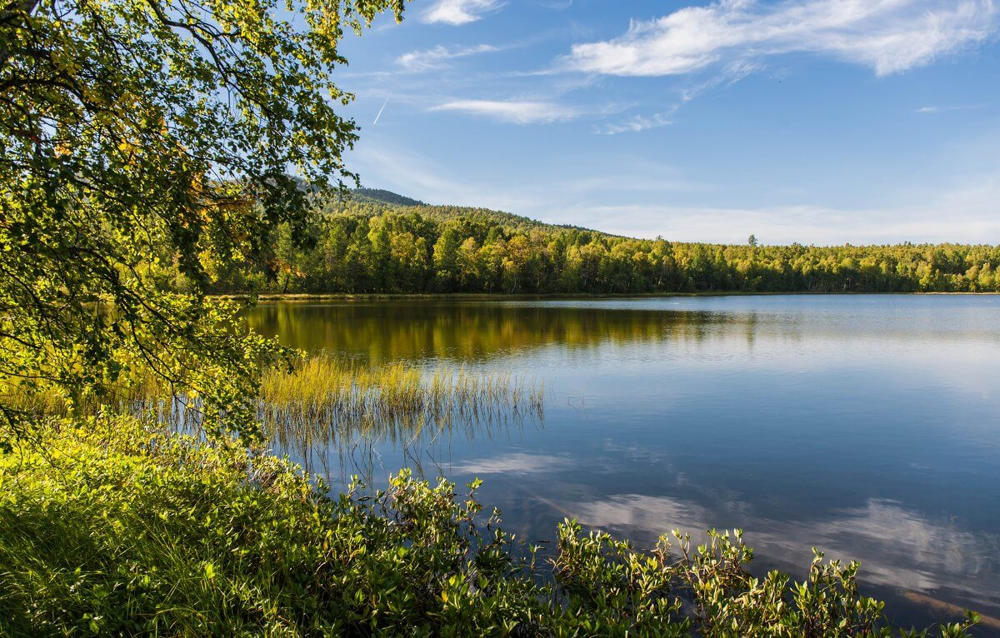
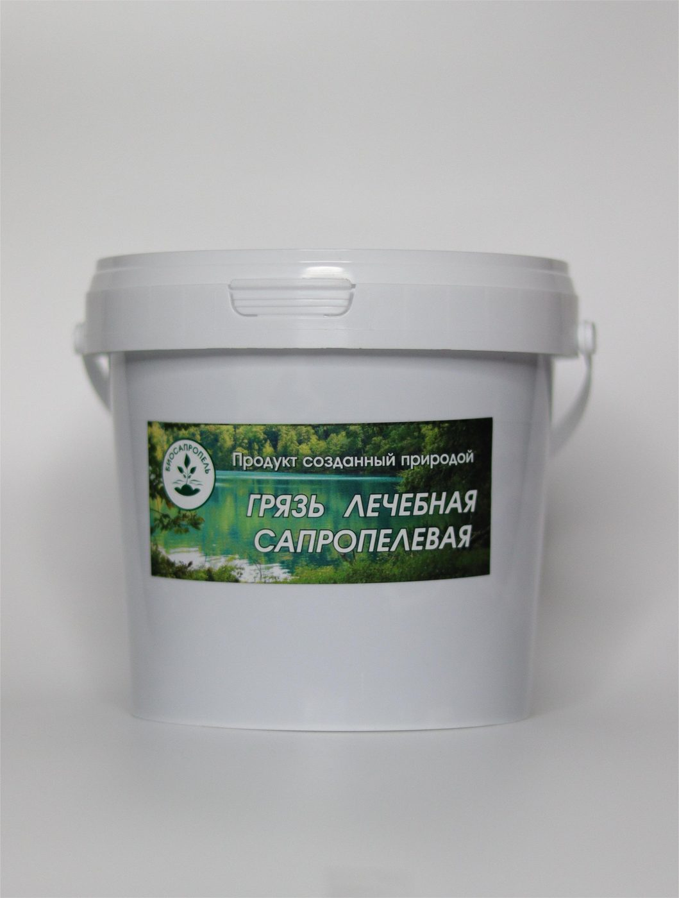
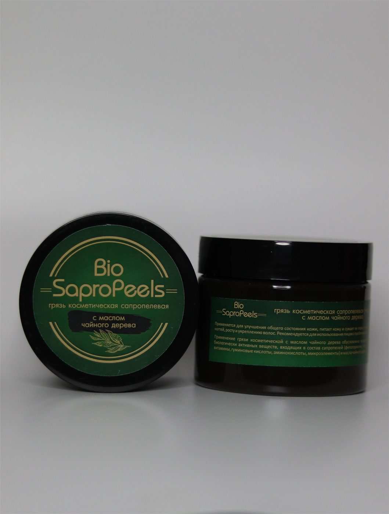
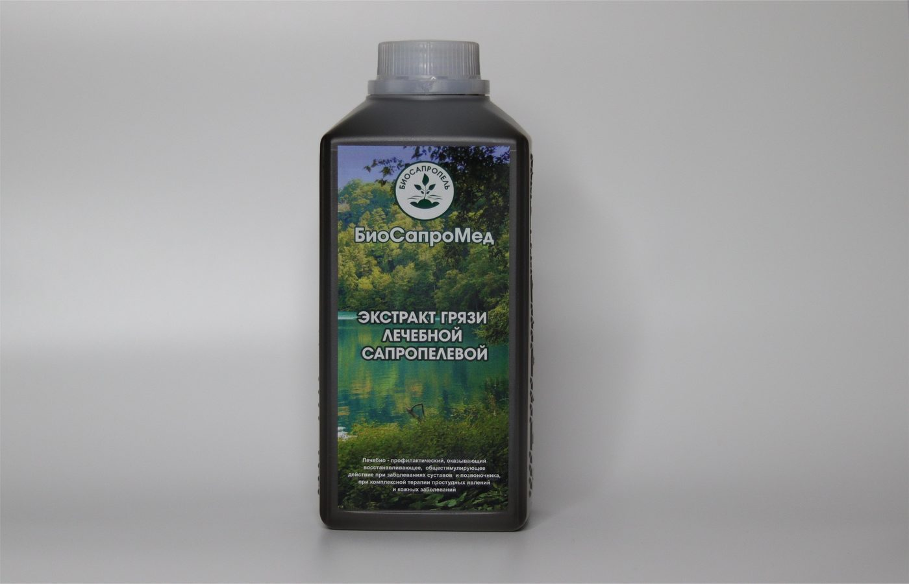
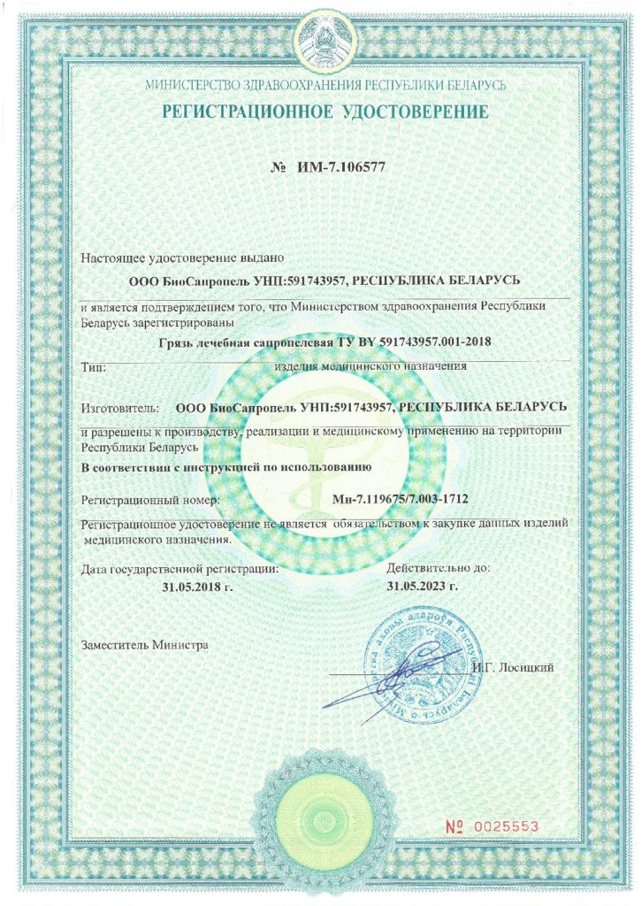

Производство
Производство
и продукция
От природного сапропеля до готового продукта — контролируем каждый этап производства в Слониме, гарантируя качество и чистоту. Сила сапропеля для здоровья и красоты.

Месторождение сапропеля · Дятловский районСырьё
То, что невозможно
воспроизвести
Сапропель — пресноводный, бессульфидный, среднезольный. В его составе микро- и макроэлементы, витамины, гуминовые кислоты, аминокислоты и другие биологически активные вещества.
Сырьё добывается филиалом «Санаторий «Радон» ОАО «Белагроздравница». Сапропель — один из главных лечебных факторов здравниц Республики Беларусь.
Документы на сырьё и продукциюпроизводства
испытаний
производства
сырьё
Как это устроено
Путь сапропеля:
четыре этапа
От добычи до упаковки — каждый этап под контролем специалистов предприятия.
Добыча
Сапропель поднимают со дна водоёма, сохраняя природную структуру и биологическую активность сырья.
Подготовка
Сырьё очищают от включений и стабилизируют, бережно сохраняя минеральный комплекс и органические вещества.
Производство
Грязевая масса и аппликаторные пакеты формуются в строгом соответствии с ТУ BY 591743957.001-2018.
Контроль
Каждая партия проходит лабораторный контроль и соответствует санитарным нормам и правилам.
Продукция
Три направления —
разные задачи
Медицинские изделия, косметика и сырьё. Вся продукция продаётся через ООО «СапроЛюкс».

A · МедизделияМедицинские изделия
Грязь лечебная сапропелевая и аппликаторные пакеты. Регистрационное удостоверение Минздрава РБ.
Подробнее
B · КосметикаКосметическая серия
Маски и уход за кожей на основе косметического сапропеля для домашнего и профессионального применения.
Подробнее
C · Сырьё и экстрактЭкстракт и сырьё
Экстракт «БиоСапроМед» и органический сапропель. Форматы, документы и статус — по запросу.
ПодробнееМедицинские изделия имеют регистрационное удостоверение. Косметика и органический сапропель — отдельные категории; полный перечень документов и статусов доступен на странице «Документы» и по запросу.
Производство
Связаться
с «БиоСапропель»
По вопросам сырья, производства, документов и контроля качества. По вопросам покупки продукции, цен и поставок обращайтесь в ООО «СапроЛюкс».

Стандарты
Качество,
подтверждённое документально
Производство изделий медицинского назначения требует точности. Мы работаем по техническим условиям и подтверждаем соответствие на государственном уровне.
Продажи · SaproLux
Продукция, цены
и поставки
Вся продукция продаётся через ООО «СапроЛюкс». Клиники, санатории, косметологические центры, студии и частные клиенты. Возможна фасовка под заказ.